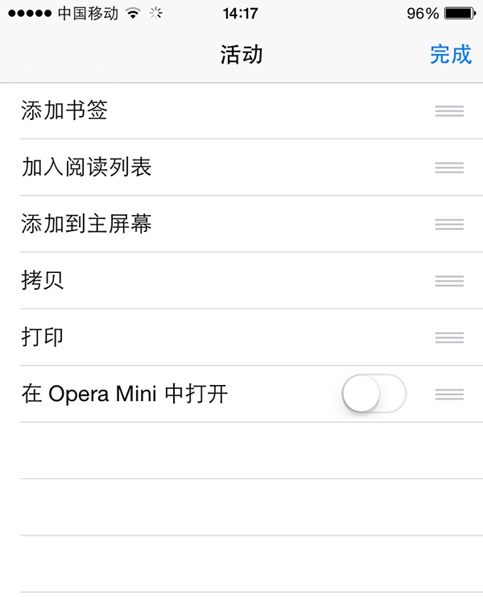

<!DOCTYPE html>
<html>
<head>
    <meta http-equiv=Content-Type content="text/html;charset=utf-8">
    <meta name="viewport" content="initial-scale=1, maximum-scale=1, user-scalable=no">
    <meta name="renderer" content="webkit">
    <meta name="full-screen" content="yes">
    <title>Mockplus 原型预览</title>
    <link rel="stylesheet" href="css/normalize.css"/>
    <link rel="stylesheet" href="css/style.css"/>
    <![if gte IE 9 | !IE ]>
    <script src="js/libs/qrcode.min.js"></script>
    <script src="js/data.js"></script>
    <script data-main="js/app.min.js" src="js/libs/require.js"></script>
    <![endif]>
</head>
<body>
<!--[if lt IE 9]>
<div class="can_not_help">
    <p>抱歉，你的浏览器版本太低，请使用IE 9或更高版本的浏览器打开。</p>

    <p>使用 Chrome, Firefox, Safari 可以获得更佳效果。</p>
</div>
<![endif]-->
<script type="text/html" id="template-loader">
    <div class="loading">
        <div class="logo"></div>
        <div class="desc">
            <div class="title">
                加载中，请稍候...
            </div>
            <span class="progress">0%</span>
        </div>
    </div>
</script>
<script type="text/html" id="template-footer">
    Powered by <a target="_blank" title="v2.0.0" href="https://www.mockplus.cn">mockplus.cn</a>
</script>
<script type="text/html" id="template-header">
    <h2 class="title"><%= title %></h2>
</script>
<script type="text/html" id="template-menu">
    <b class="close"></b>
    <b class="split"></b>
</script>
<script type="text/html" id="template-home">
    <div class="home">
        <div class="header">
            <h2 class="title"><%= meta.title %></h2>

            <p class="desc">共 <%= pages.length %> 个页面</p>
        </div>
        <div class="run cmd" data-cmd="run">
            <button class="run_btn">运行</button>
        </div>
    </div>
</script>
<script type="text/html" id="template-screen">
    <div id="effect"></div>
</script>
<script type="text/html" id="template-config">
    <div class="fit-screen">
        <input id="fit-to-screen" type="checkbox" <%= isFitToScreen %> />
        <label for="fit-to-screen">自动适应显示器</label>
    </div>
    <div class="always-show-link">
        <input id="always-show-link" type="checkbox" <%= isAlwaysShowLink %>/>
        <label for="always-show-link">始终显示链接</label>
    </div>
    <div class="hover-show-link">
        <input id="hover-show-link" type="checkbox" <%= isHoverShowLink %>/>
        <label for="hover-show-link">鼠标滑过时，显示链接</label>
    </div>
    <span class="help">查看快捷键</span>
</script>
<script type="text/html" id="template-share">
    <div id="share-qrcode"></div>
</script>
<script type="text/html" id="template-tree">
    <h3 class="title"><%= title %></h3>
    <div class="tree-container">
        <ul class="tree"></ul>
    </div>
</script>
<script type="text/html" id="template-tree-item">
    <li><%= title %>
        <ul></ul>
    </li>
</script>
<script type="text/html" id="template-panel">
    <div class="panel-container">
        <div id="control-panel" class="panel">
            <div class="r-b cmd" data-cmd="home">
                <div class="btn">
                    <b class="home_ico"></b>
                    <span>首页</span>
                </div>
            </div>
            <div class="r-b cmd" data-cmd="fullscreen">
                <div class="btn fullscreen">
                    <b class="full_ico"></b>
                    <span>全屏</span>
                </div>
            </div>
            <div class="b cmd" data-cmd="menu">
                <div class="btn">
                    <b class="tree_ico"></b>
                    <span>列表</span>
                </div>
            </div>
            <div class="r-b cmd" data-cmd="link">
                <div class="btn">
                    <b class="link_ico"></b>
                    <span class="link-label"><%= link %></span>
                </div>
            </div>
            <div class="r-b cmd" data-cmd="refresh">
                <div class="btn">
                    <b class="refresh"></b>
                    <span>刷新</span>
                </div>
            </div>
            <div class="b cmd" data-cmd="playback">
                <div class="btn">
                    <b class="playback"></b>
                    <span>回放</span>
                </div>
            </div>
            <div class="r cmd" data-cmd="prev">
                <div class="btn">
                    <b class="prev"></b>
                    <span>上一页</span>
                </div>
            </div>
            <div class="r">
            </div>
            <div class="cmd" data-cmd="next">
                <div class="btn">
                    <b class="next"></b>
                    <span>下一页</span>
                </div>
            </div>
        </div>
    </div>
</script>
<script type="text/html" id="template-ball">
    <div class="rectangle">
        <div class="ball-outside">
            <div class="ball-middle">
                <div class="ball-inside"></div>
            </div>
        </div>
    </div>
</script>
<script type="text/html" id="template-message">
    <p class="<%= className %>"><%= message %></p>
</script>
<script type="text/html" id="template-help-full-screen">
    <div class="content">
        <p>抱歉，你的浏览器无法直接开启全屏功能。</p>
        <div class="browser browser-360">
            <h3>360 浏览器开启全屏方法</h3>
            <div class="step">
                <h4>1. 点击底部菜单栏中间的菜单键打开菜单；</h4>
                
            </div>
            <div class="step">
                <h4>2. 向右滑动菜单，打开第 2 屏菜单，点击其中的全屏模式按钮。</h4>
                
            </div>
        </div>
        <div class="browser browser-sogou">
            <h3>搜狗浏览器开启全屏方法</h3>
            <div class="step">
                <h4>1. 点击底部菜单栏上的菜单键打开菜单；</h4>
                
            </div>
            <div class="step">
                <h4>2. 向右滑动菜单，打开第 2 屏菜单，点击其中的全屏按钮。</h4>
                
            </div>
        </div>
        <div class="browser browser-safari">
            <h3>Safari 浏览器开启全屏方法</h3>
            <div class="step">
                <h4>1. 点击底部中间的按钮</h4>
                
            </div>
            <div class="step">
                <h4>2. 打开弹出菜单</h4>
                
            </div>
            <div class="step">
                <h4>2. 第 2 栏按钮上向左滑动，找到 "更多“。</h4>
                
            </div>
            <div class="step">
                <h4>3. 点击更多，打开活动菜单，选择添加到主屏幕</h4>
                
            </div>
            <div class="step">
                <h4>4. 从主屏幕打开会自动进入全屏模式。</h4>
            </div>
        </div>
        <div class="browser browser-baidu">
            <h3>百度浏览器中开启全屏方法</h3>
            <div class="step">
                <h4>1. 点击底部的菜单键打开菜单</h4>
                
            </div>
            <div class="step">
                <h4>2. 向右滑动菜单，打开第 2 屏菜单，点击其中的 "全屏浏览"</h4>
                
            </div>
        </div>
        <div class="browser browser-wechat">
            <h3>微信中开启全屏方法</h3>
            <div class="step">
                <h4>微信中无法直接开启全屏，请在右上角点击菜单，选择 “在浏览器中打开” 使用其他浏览器查看。</h4>
                
            </div>
        </div>
        <div class="browser browser-unknown">
            <h3>其他浏览器</h3>
            <p>更多浏览器的帮助文档正在整理中，建议在菜单中查找全屏功能。如果没有找到，可以暂时换用以下浏览器：</p>
            <ul>
                <li>Google Chrome</li>
                <li>UC</li>
                <li>QQ</li>
                <li>百度</li>
            </ul>
        </div>
        <button class="close">我知道了</button>
    </div>
</script>
<script type="text/html" id="template-help-shortcut">
    <h3>快捷键</h3>
    <ul>
        <li><span>&#8593;</span> 页面列表中的上一个文件</li>
        <li><span>&#8595;</span> 页面列表中的下一个文件</li>
        <li><span>&#8592;</span> 上一步</li>
        <li><span>&#8594;</span> 下一步</li>
        <li><span>空格键</span> 回放</li>
        <li><span>ESC</span> 隐藏此帮助</li>
    </ul>
</script>
</body>
</html>
<!-- build time: Fri May 22 18:55:50 CST 2015-->
